SEEDED WORLDS
Each world comes from a random seed alone. The seed sets the slow causes (a sinking basin, uneven uplift, one zone of thickened crust, volcanic islands, a rain wind) and an erosion simulation of about three million years makes the land. Each world downloads about 14 MB.
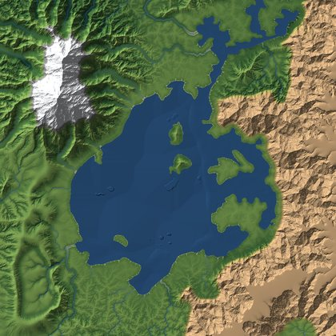
World 241191Highest summit 6,387 m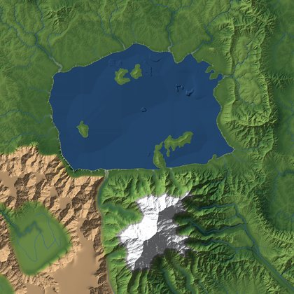
World 712933Highest summit 6,057 m World 752500Highest summit 6,398 m
World 752500Highest summit 6,398 m
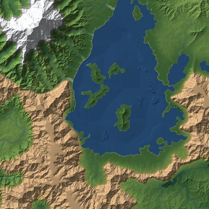
World 752500 (open edges)Highest summit 6,683 mEarlier bakes
Kept for comparison: the same seeds baked with earlier versions of the generator.
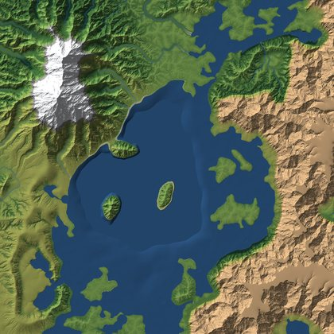
World 241191 (fifth bake)Highest summit 6,387 m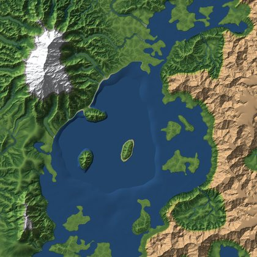
World 241191 (fourth bake)Highest summit 6,408 m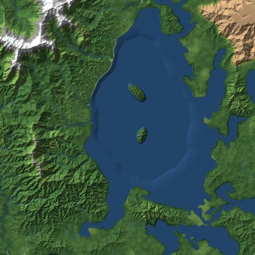
World 752500 (third bake)Highest summit 3,957 m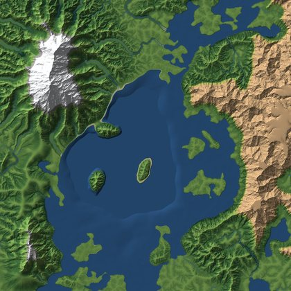
World 241191 (third bake)Highest summit 6,409 m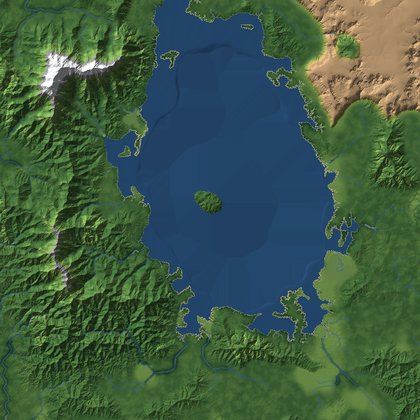
World 752500 (second bake)Highest summit 3,930 m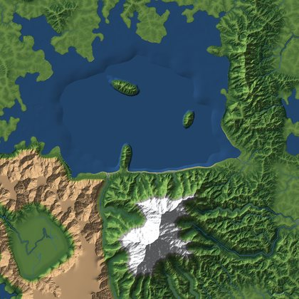
World 712933 (second bake)Highest summit 6,057 m World 241191 (second bake)Highest summit 6,409 m
World 241191 (second bake)Highest summit 6,409 m
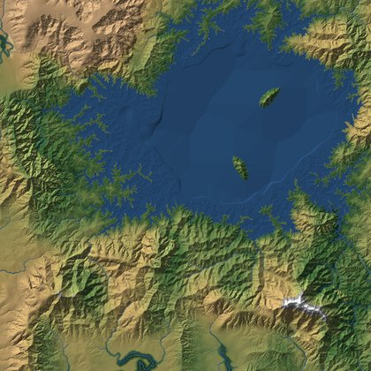
World 988063 (first bake)Highest summit 3,178 m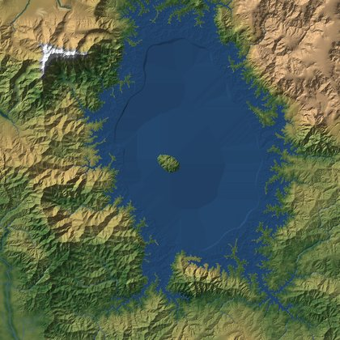
World 752500 (first bake)Highest summit 3,472 m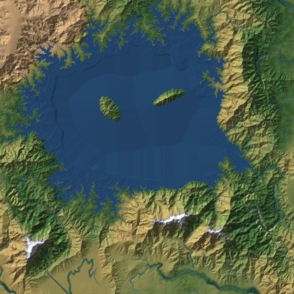
World 712933 (first bake)Highest summit 3,505 m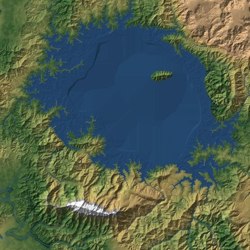
World 452182 (first bake)Highest summit 7,120 m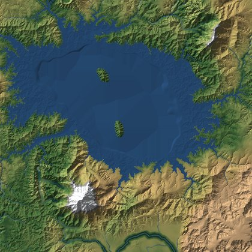
World 397119 (first bake)Highest summit 4,950 m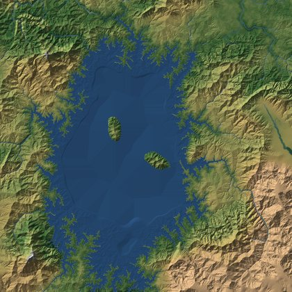
World 241191 (first bake)Highest summit 2,593 m